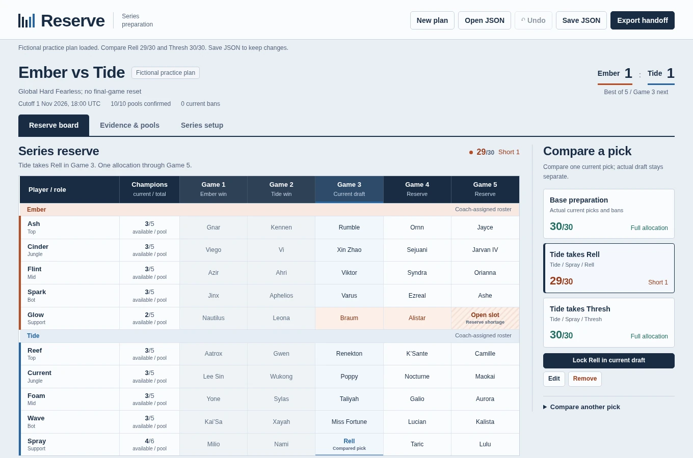

01 / Your project
Use your installed Codex and the exact model enabled for your provider key. The builder supplies Bash or PowerShell commands.
Native Codex / Provider trial
One provider trial. Your existing project.
Keep MCP, trust and normal defaults. Run a real task, inspect its local receipt, and bring your next task to the same profile.

Sidecar format observed on Codex CLI 0.163.0 · Responses API
Use your installed Codex and the exact model enabled for your provider key. The builder supplies Bash or PowerShell commands.
Open native events locally. Read the test command, output and exit; match task time and model in your provider’s usage console.
Keep the sidecar. Enter the key in a new terminal and launch codex -p trial. Omit -p for your normal defaults.
Open the free builder & local receiptRecorded Linux task resultNative discussion & feedback
We reproduced the fault, traced the return boundary, and repaired the route. Inspect the saved synthetic executions and real HTTP records.
Read the native repair & checksShipped upstream: our Ivanti Saved Search pagination fix was merged by SYNERGY and released in its community-node package 1.10.0. Run the native checks.
One route, a focused fix and five agreed acceptance checks. Scope and payment terms agreed first.

A free, local Hard Fearless workspace for League of Legends coaches. Confirm pools, record series bans and picks, compare branches against the shared reserve, and check a complete allocation or exact shortage. Save JSON and export a Markdown handoff. All public samples are fictional.
Test the real n8n engine, or inspect saved parent/child item links locally. The one-minute first case includes passing and regressed native reports. Local JSON slices: download an editor test, import into your existing n8n, and run it—no n8n-check CLI or Docker. v1, single-run; no Merge, loops, waits or mocks.
Open two original HiGHS logs in your browser. Inspect the reported status, gap, phase times and primal/dual progress; jump to the exact source lines. Save a private comparison to reopen for the next change, and make an editable engineering brief. Your logs stay on your device.
Choose compatible crew schedules that cover each flight once, or decide which warehouses to open and how to supply customers. Our complete crew-scheduling (SPP) and warehouse-supply (CFLP) studies use published FrontierOR cases. Cold benchmarks include full feasibility checks, strong solver controls and measured cost/runtime trade-offs, with weaker cases retained.
Benchmark native papyrus-fiber archives against original manual graphs. The preregistered two-ROI study separates raw and cleaned operating points, architecture controls and DP-specific effects, with complete native family checks.
Read the prospective pipeline study / Current-emitter transfer audit / Run the native ObjectStore handoff.
CPU neural learning and causal priors for lossless compression. Reproduce the completed coded studies, including negative results, and inspect the prepared-stream restoration of the original 1 GB input.
Read the researchCPU runtime tools: author-confirmed ARM64 parity and Native Q8 M1 — FP32 activations with constant Q8 weights; the measured Linux AVX2 EPYC static single-token operator takes 0.146 ms (6.70× vs stock two-Q4 Split8; 1.66× vs dense FP32 with the same dequantized weights). OpenVINO BF16 example inputs: a native dtype-and-value check with a small typed-byte fix.
Single-copy shared-Q8 DistilGPT2: complete CPU decode. FP32 activations, one packed embedding/head and all logits/KV outputs. One-thread Linux AVX2/noVNNI at past16/128/512: peak fresh-worker RSS falls 25.08%; whole-call p50 changes +0.43–1.15% against faster fresh shared-Q8 native controls. All thirteen outputs are bitwise identical; NIST2048 per-token NLL is unchanged, with total loss +0.00877 nat/token versus the original FP32 report. Run your own prompt / Previous shared-Q8 study / 24-Gemm study.
Fixed GGUF → FP32 bridge. For SAFWAAN/fieldatlas-reader-qwen3.5-2b, revision d7425eba, Q4_K_M/older split layout: all 320 tensors restored from already-quantized values to 7.527 GB standard FP32 in 13.11 s, peak CPU RSS 1.30 GB. Full tokenizer and two original-GGUF serving controls pass. On the same original GGUF, an actual run of all 60 official public cases scored 53/60. The restored-FP32 v10 run fully loaded, then stopped before HF forward on a tokenizer API return-type assertion (BatchEncoding vs list). HF serving and full-context gradients remain unexecuted. v10 evidence. Original model/training: Qwen / SAFWAAN.
Have a CPU model/runtime mismatch? US$150 CPU parity diagnosis: two pinned configurations, measured differences and a rerunnable report. Send a minimal repro and deadline.
The FlashInfer PR author independently reran three instrumented CPU controls and adopted our lifecycle notes. The InferRSI implementation author reports adding our synthetic paired-metric fixture to compatibility regressions.
FHERMA ByteCRT: exact wide-polynomial GPU. Stream 128 independent products through four bounded slots. Native whole-call latency falls from 291.519 to 89.809 ms (69.19%); the official three-fresh-seed result passes 3/3 exact at 89.648935 ms. CPU packing, transfers, GPU work and the complete owned result stay timed. Official B128 result / Pinned streaming source. The legacy two-point result retains 40/40 exact at 20 seeds per point.
Test the data your agent hands off. Run the native agent-output labs: preserve per-call purchase fields, surface SQL fetch errors, freeze JSON tool history, and restore complete LangGraph tool batches. LangGraph PR #9560 author adity982 independently reran the complete provider-free lab on Windows 11—all checks passed. Agno issue #11557 author JiaxPeaceLove reran the full SQL-fetch lab on Windows 11—all checks passed, with normal cleanup and no shim. The independently checked SQL fix by adityav1709 was merged upstream on 2026-11-17. Test LlamaIndex journal recovery across two process restarts, with both parallel answer routes and all four stored values checked. Give each CrewAI flow its own budget using a caller snapshot on the released SDK.
Evinor merged our HubSpot matching fix and the six-case / Slack, Sheets and digest checks. Its founder independently ran the source-driven matching check: six of six passed, exit0 on Node 22.23.4.
SQLGlot merged the WHERE-only CASE membership guard. Our native review checks NULLs, duplicate rows and protected projection/ON paths.
A NocoBase user applied our field-source mapping and full-page reload to their own collection.
dbt macro annotations: keep cold and warm parses consistent. A two-file fix preserves fully documented generic tests and catches incorrect arguments through saved-manifest reuse. Released 1.12.6 and current-source checks pass; eight focused tests cover documentation and signature changes. Run the free native review.